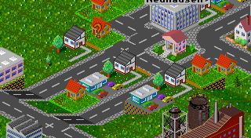
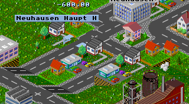

Bushaltestellen können an jedem geraden Strsßenstück gebaut werden. Um eine Bushaltestelle zu bauen genügt es, das betreffende Straßenstück mit dem Busthaltestellenbauwerkzeug anzuklicken, und schon wird dort eine Bushaltestelle gebaut. Das rechte Bild zeigt die Hauptstraße einer Stadt, nachdem dort eine Bushaltestelle gebaut wurde.
|  |  |